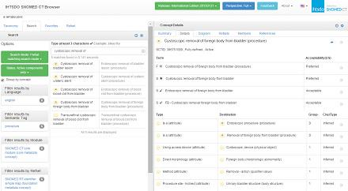
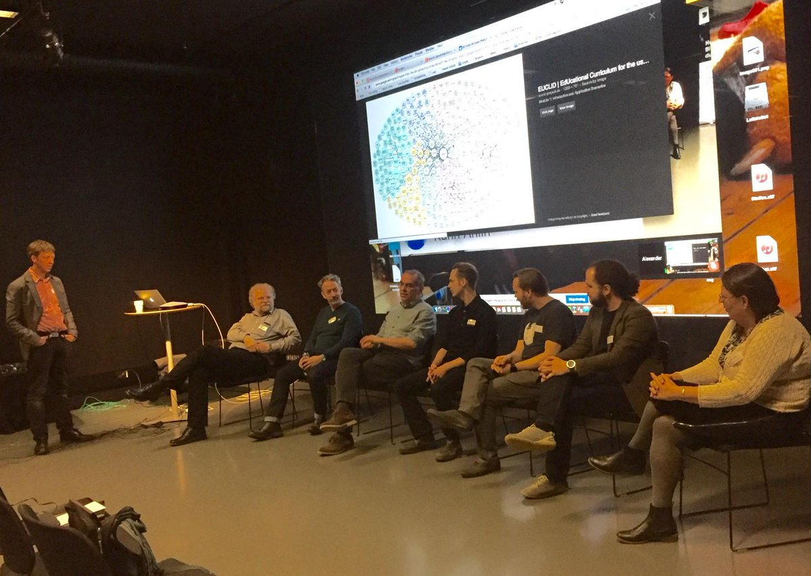
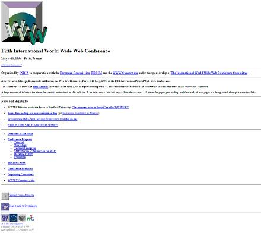

May 2015
Looking forward to follow #eswc2015 2015.eswc-conferences.org with many of the great people I met F2F last year at #iswc2014
I'm looking forward to see interesting submission from practical use of Semantic Web in industry #swat4ls swat4ls.org/workshops/camb…
WIth Twitter "... you are not on the podium or on a stage. It is not meant to be an auditorium, but a seminar room." gu.com/p/3xy6q/stw
" become active participants and not merely either information producers or consumers." gu.com/p/3xy6q/stw
Ah, yes I remember, your feed inspired me to write my very first blog post kerfors.blogspot.se/2010/11/what-d… twitter.com/digiphile/stat…
Last exercise done in the final assessment in the @SnomedCT E-learning course done using the browser.ihtsdotools.org

Bookmarked: "Analyzing U.S. prescription lists with RxNorm and the ATC/DDD Index." on CiteUlike ift.tt/1Kr1itq
This is new for me: Global Database of Events, Language, and Tone (GDELT) gdeltproject.org twitter.com/jwyg/status/60…
Pointer in @EX101x MOOC: Testing Excels as they were software using @Felienne's Expector tool felienne.com/Expector
Interesting, need to read up on this categoricaldata.net (Any hope for a video/audio of @ericneumann's talk?) twitter.com/rlpow/status/6…
Excellent to see the #LinkedData #OpenData cloud illustration lod-cloud.net on @dhinchcliffe's overview twitter.com/michelmanias/s…
Finally some time to watch some more live streaming from #bigdatamed bigdata.stanford.edu/live-stream.ht…

Nice, and yes a 2nd vidoe on getting data from @wikidata using the Q-id's for the musicians would be great #wikidata twitter.com/edsu/status/60…
Me too, would love to attend one more 20 years after my 1st in Paris WWW5 twitter.com/www2016ca/stat…
@cjdinger @LexJansen @SAS_Cares Looking forward to hear your thoughts export SAS metadata in JSON for csv data #csvw kerfors.blogspot.se/2015/04/csvw-f…
.@joe_hellerstein @TyeDataSci Checkout W3C proposal for "csv on the web" #csvw ie data in csv with metadata in json kerfors.blogspot.se/2015/04/csvw-f…
Our panel at the #LinkedData meet-up. Videos, slides, links and photos: ait.gu.se/informatik/lin… #LankadeData

Material from our #LinkedData meetup, Gothenburg, 28 April: ait.gu.se/informatik/lin… #LankadeData HT @flandqvist @ituniv
@danbri yepp, I was fascinated by #TopicMaps back then twitter.com/kerfors/status… and tried to understand SKOS in relation to TM
"RDF representations will be interface between operational healthcare data exchange and analysis & reasoning tools." twitter.com/grahamegrieve/…
Looks like we will be a small study group following the MOOC about @ApacheSpark from @databricks edx.org/course/introdu…
This week I'll follow #WWW2015 @WWWfirenze 24th Int World Wide Web conf, Florence and remember the 5th, Paris, 1996 w3.org/Conferences/WW…
Looking forward to watch him and a few others on youtube.com/user/nordicapis #nordicapis twitter.com/travisspencer/…
Checkout @w3c's proposal: "CSV on the Web" w3.org/blog/data/2015… csv with metadata in json #cvsw twitter.com/rbloggers/stat…
New names on my @followfriday 2015 list: @EricTopol @DShaywitz in the intersection between medicine and technology medium.com/@kerfors/my-fo…
+1 "Keep the Complexity Simplify with SKOS" slideshare.net/yeksitra/keep-… @jamesraymorris When will we have a SKOS rendering of NCIt do you think?
@markhneedham Cool! Checkout @w3c proposal "CSV on the Web" for csv data wi/ metadata in json w3.org/blog/data/2015…
@novastaylor Yepp, I did that early on. Would be great if you could comment on kerfors.blogspot.se/2015/02/clinic… and link to the CSR tables in RDF work
"One can share info between plp using websites One can SHARE info between appl using web services (APIs)" xml4pharma.com/CDISC_EU_Inter… @cdiscSHARE
It's so nice to point colleagues in pharma to @openFDA's nice reference on API basics open.fda.gov/api/reference/
Great presentation #CDISCEurope presentation on @cdiscSHARE web services from Jozef Aerts #XML4Pharma linkedin.com/grp/post/56393…
Dear @KirstenLangendo have you seen phusewiki.org/wiki/index.php… and met @MarcJuAndersen also Danish?
@KirstenLangendo @CharynFaenza Thank you for following. Checkout my blog on SAS data with metadata as csv and json kerfors.blogspot.se/2015/04/csvw-f…
I've now come to the section on Mappings in @SnomedCT E-learning Foundation course ihtsdo.org/news-articles/… topic of interest for #ehr4cr
A colleague made me dig up this great #metadata quote, and I think the source for it?: twitter.com/textfiles/stat…
Cool, @jacobideskog starts with: Skylock - Your Bicycle. Connected. youtu.be/6gyLPjDakAc to talk about "Pass of Access" at #NordicAPIs
Thanks, I'll pick up and share with colleagues. Will be interesting read for the train home tonight :-) #NordicAPIs twitter.com/travisspencer/…
"#OAuth2 is the new protocol of protocols" -@travisspencer nordicapis.com/building-a-sec… #NordicAPIs Actors: RO / AS,/ RS, Tokens, Scopes
Key pts: Analyse Constanty, Continuous Updates, Machines are not Flexible, Manage Versions -@andreaskrohn #nordicAPIs nordicapis.com/envisioning-th…
"csv on the web, i.e. csv with metadata in json, are so 2015 :-)" check out w3.org/blog/data/2015… #csvw twitter.com/felienne/statu…
Finally, on a bus instead of the train, on my way to @nordicapis APIs World Tour in Copenhagen nordicapis.com/tour/nordic-ap…
"what’s data and what’s metadata depends on where you’re standing." --@jpom medium.com/@jpom/thanks-t… #metadata
Interesting tweet, and discussion, thanks @jessitron (and @thedevel for the pointer) twitter.com/jessitron/stat…
Catching up on the nice #hackBD2K feed and bit.ly/hackBD2Kpresen… from yesterday. Thanks for posting @andrewsu twitter.com/andrewsu/statu…
Good to see @neo4j on the agenda for the last week of the Data Analyse MOOC @EX101x with awesome @Felienne twitter.com/neo4j/status/5…
Sounds good: 2[2] Need read interface (APIs) with flat, easy to use views (json/json-ld) of configured standards twitter.com/plample_/statu…
Sounds good: 1[2] Need standard config. of variants (versions over time and alternatives over regions/TAs etc.) twitter.com/plample_/statu…
Web Nostalgica; Fifth International World Wide Web Conference, May 6-10, 1996 - Paris, France w3.org/Conferences/WW…

Great quotes/photos @timberners_lee from #W3C20 tonight. I'm remembering attending w3.org/Conferences/WW… Paris 1996 twitter.com/VincentMarcatt…
Well I don' think one makes sense. @SnomedCT and @MedDRAMSSO have different purpose with #SNOMED and #MedDRA twitter.com/plample_/statu…
.@nelvig Nice lunch. Checkout BBC Storyline Ontology bbc.co.uk/ontologies/sto… and #LinkedData bbc.co.uk/academy/techno… twitter.com/2welten/status…
#DataIntegration and #DataCataloging of Tabular data and Metadata? @Tamr_Inc Check out @w3c "CSV on the Web" #csvw w3.org/blog/data/2015…
#DataVirtualization Introspect of tabular data and metadata? @CiscoDataVirt Check out @w3c "CSV on the Web" #csvw w3.org/blog/data/2015…
@Jan_Ainali Hej Jan, och tack för en kanon drafning! Problem med denna länk, Kan du re-posta? / Tack
On the bus this rainy morning watching @bobdc's excellent "SPARQL: the [11 mins] video" snee.com/bobdc.blog/201… #LinkedData #sparql
Good to see a 1 June as the start date for @EDX and @databricks MOOC: Introduction to Big Data with Apache Spark edx.org/course/introdu…